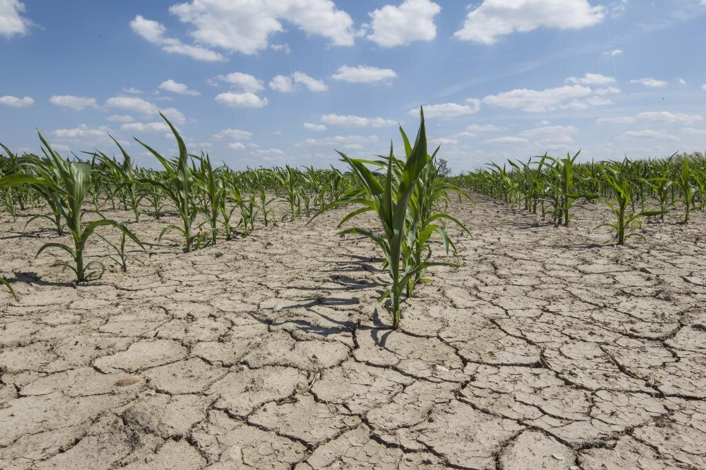

Deforestation is the process of clearing or removing forests or trees from a land area, often to make the land available for other uses such as agriculture, urban development, mining, or infrastructure project.
Causes of Deforestation:
Logging
Commercial logging for timber, paper, and wood-based products.
Illegal logging driven by demand for rare or exotic woods.
Agricultural Expansion
Clearing forests for large-scale farming (e.g., soy, palm oil, and cattle grazing).
Slash-and-burn farming in tropical areas for small-scale cultivation.
Infrastructure Development
Building roads, urban areas, and industrial zones.
Construction of hydroelectric dams in forested areas.
Mining and Resource Extraction
Clearing land to extract minerals, oil and gas.
Quarrying in forested regions.
Unsustainable Livelihood Practices
Overharvesting of forest resources like fuelwood or medicinal plants.
Fires
Intentional burning to clear land for agriculture.
Accidental or uncontrolled wildfires exacerbated by human activities.
Impacts of Deforestation:
Environmental Impacts
Biodiversity Loss: Destruction of habitats threatens plant and animal species, some to the point of extinction.
Climate Change: Forest act as carbon sinks. Their destruction releases stored CO₂ contributing to global warming.
Soil Degradation: Exposed soils become prone to erosion, nutrient depletion, and desertification.
Water Cycle Disruption: Loss of trees affects rainfall patterns and reduces groundwater recharge.
Economic Impacts
Loss of livelihoods for communities dependent on forests for resources.
Long-term reduction in ecosystem services, such as clean air and water, affecting agriculture and other industries.
Social Impacts
Displacement of indigenous communities.
Loss of cultural and spiritual values associated with forests.

How to Prevent or Reduce Deforestation:
Promote Sustainable Agriculture
Implement agroforestry, combining trees with crop and livestock.
Reduce reliance on slash-and-burn agriculture.
Encourage Reforestation and Afforestation
Replant native trees in deforested areas (reforestation).
Establish new forests in areas where none existed before (afforestation).
Enforcce Laws and Regulations
Strengthen protections for forested areas through government policies.
Combat illegal logging and trade of forest products.
Support Sustainable Forestry
Adopt selective logging practices instead of clear-cutting.
Utilise timber certifications like FSC (Forest Stewardship Council).